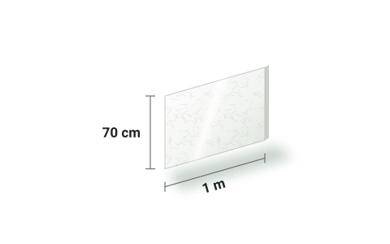
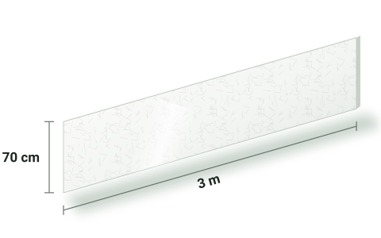
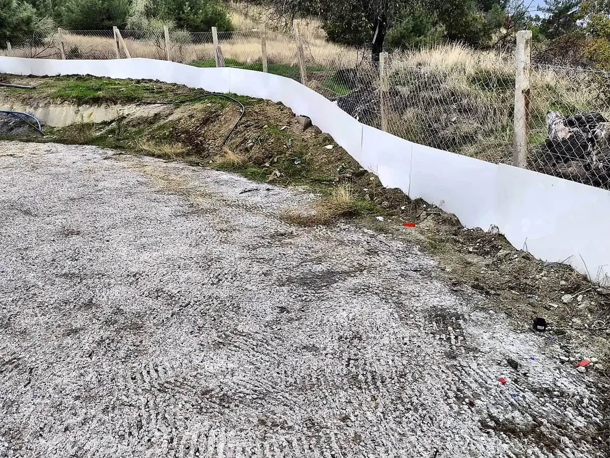
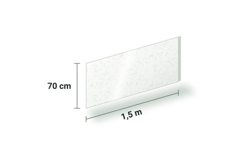
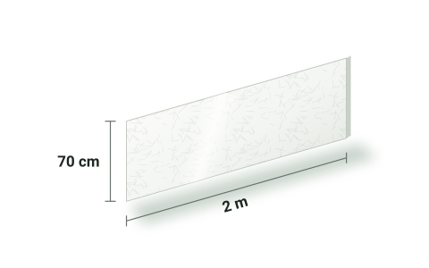
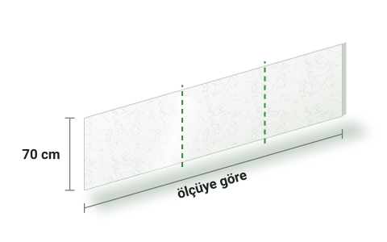
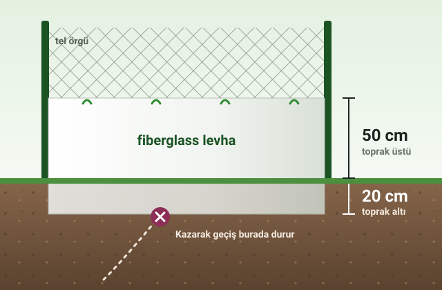
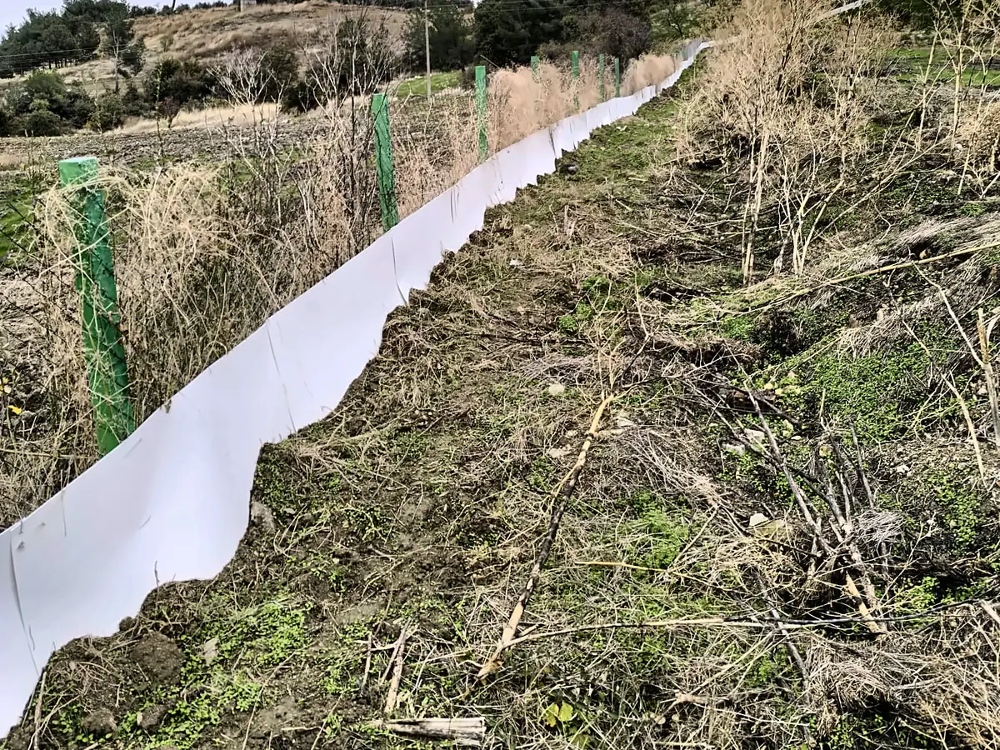
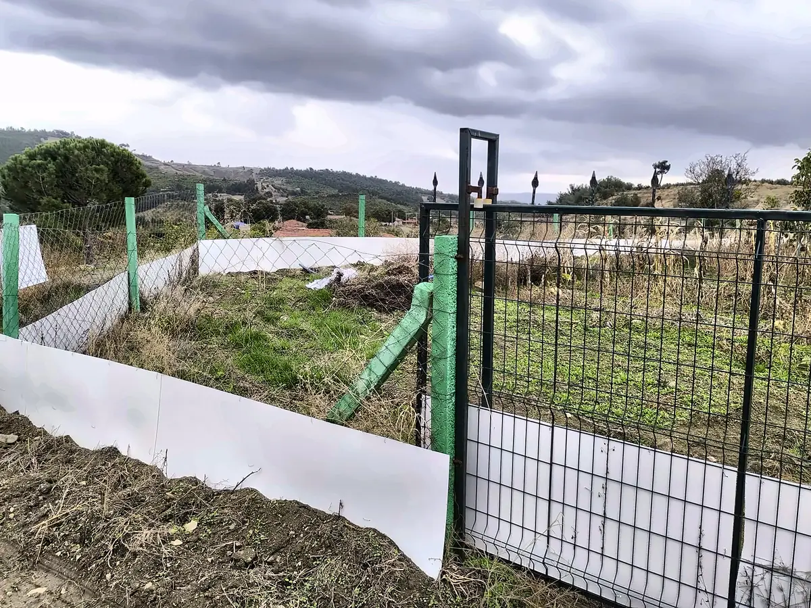
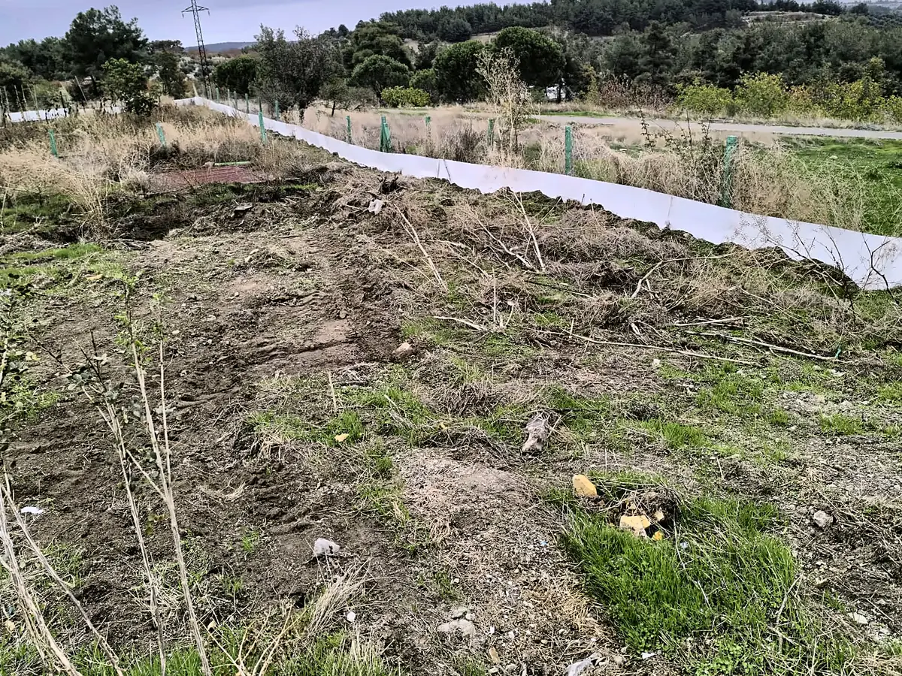

En kısa boy

Fiberset 100
100 × 70 cm
- Boy100 cm
- Yükseklik70 cm
- KullanımDar aralıklar ve en kısa kenarlar için
Akhisar, Manisa ve Balıkesir için teslimat dahil teklif
0546 936 07 62
Biyogüvenlik toprağın altından başlar
Fiberset levhaları, kümes çevresindeki tel örgünün alt bölümünü kapatmak için kullanılır. Levhalar 70 cm yüksekliğindedir. Hattınıza göre 100, 150, 200 veya 300 cm boy seçebilir, köşe ve kapı geçişleri için özel kesim isteyebilirsiniz.


Gerçek uygulamalarSahadanÜrünlerimiz
Bütün levhalar 70 cm yüksekliğindedir: uygulamada 20 cm'si toprağın altına girer, 50 cm'si toprağın üstünde kalır. Boyu hattınıza göre seçin; köşe ve kapı yanları için özel kesim isteyin.

100 × 70 cm

150 × 70 cm

200 × 70 cm
300 × 70 cm

Özel kesim · 70 cm yükseklik
Teklif, kapatılacak net çevreye ve seçtiğiniz boya göre hazırlanır. Akhisar, Manisa ve Balıkesir için fiyat, kümesinize teslim fiyatıdır.
Levha hesabı
Kapı boşluklarını çıkardıktan sonra kapatılacak net çevreyi metre olarak girin. Levha sayısı, net uzunluğun levha boyuna bölünüp yukarı yuvarlanmasıyla bulunur.
Köşe, kesim ve birleşim ayrıntıları kesin sipariş miktarını değiştirebilir; miktarı teklif sırasında birlikte netleştiririz.
Uyum süresi Ocak 2027 sonunda doluyor. Tebliğ, tel örgünün yerden en az 50 cm duvarla desteklenmesini istiyor. Denetimde eksik çıkmaması için çevre hattınızın metrajını şimdi çıkarın. Tebliğ ne istiyor?
Tebliğ No: 2025/33
Tarım ve Orman Bakanlığı'nın Ticari Etlik ve Yumurtacı Kanatlı İşletmelerinin Biyogüvenlik Kurallarına Dair Tebliği (No: 2025/33), 31 Ocak 2026 tarihli ve 33154 sayılı Resmî Gazete'de yayımlandı. Çevre çitiyle ilgili hüküm 8. maddenin birinci fıkrasındadır.
İşletmenin sınırları, en az 150 cm yüksekliğinde sağlam tel örgü ya da çitle çevrilir.
Madde 8/1Tel örgü ya da çit, yer seviyesinden itibaren en az 50 cm duvarla desteklenir. Amaç, kemirgen ve diğer hayvan girişlerini önlemektir.
Madde 8/1Tebliğ yayımlandığında Bakanlık veri sistemine kayıtlı olan işletmelere tanınan süre. 31 Ocak 2026'da başladı, Ocak 2027 sonunda doluyor.
Geçici Madde 1“… beton, taş, tuğla, metal panel veya tahta olmayan benzeri sağlam ve dayanıklı materyallerden yapılmış, süreklilik arz eden fiziki bariyer …”
Fiberset levhası tebliğe uygundur. Fiberglass levha, tebliğdeki “tahta olmayan benzeri sağlam ve dayanıklı materyal” kapsamındadır ve Manisa İl Tarım ve Orman Müdürlüğü'nce kabul edilen malzemedir.
Kaynak: Resmî Gazete, 31 Ocak 2026, sayı 33154. Son kontrol: 19 Kasım 2026. Bu bölüm bilgilendirme amaçlıdır; bağlayıcı olan tebliğ metnidir. Kümesiniz için geçerli güncel kuralları Tarım ve Orman Bakanlığı resmî duyurularından veya il/ilçe tarım ve orman müdürlüklerinden teyit edebilirsiniz.

Kesit ve ölçü
Fiberset levhası 70 cm yüksekliğindedir. Uygulamada 20 cm'si toprağın altına girer, 50 cm'si toprağın üstünde kalır ve üst kenarı tel örgüye bağlanır.
Neden fiberglass?
Fiberglass, cam elyafla güçlendirilmiş bir malzemedir; frigorifik tırların ve karavanların dış cephesinde, teknelerde kullanılan malzeme ailesindendir.
Nemli toprakta, gübre ve yıkama suyuyla temasta paslanmaz.
Nemli toprakla sürekli temasta çürümez.
Güneşe, yağmura, sıcağa ve soğuğa dayanıklı fiberglass.
Toprağın 20 cm altına iner; fare, kedi, köpek, tilki ve sansarın kazarak girmesini zorlaştırır.
Seçtiğiniz boyda gelir; üst kenarından tel örgüye bağlanır.
Akhisar, Manisa ve Balıkesir'de fiyat, kümesinize teslim fiyatıdır.
Karşılaştırma
| Fiberset fiberglass levha | Trapez sac | Beton duvar | Yalnız tel örgü | |
|---|---|---|---|---|
| Tel örgünün alt bölümünü kapatır | Evet | Evet | Evet | Hayır |
| Biyogüvenlik tebliği (50 cm duvar) | Uygun | Uygun | Uygun | Tek başına yetmez |
| Toprakla temas | Paslanmaz, çürümez | Kaplamasına bağlı; paslanabilir | Etkilenmez | Alt bölüm açık kalır |
| Uygulama | Hafif; kazı ve tele bağlama | Kesim ve bağlama | Temel, kalıp ve işçilik | — |
| Teslimat | Akhisar, Manisa ve Balıkesir'de teslimat dahil | Tedarikçiye göre değişir | Yerinde yapılır | — |
Uygulama nasıl yapılır?
Levhalar montaja hazır gelir. Uygulamayı kendi ekibiniz yapar; adımlar aşağıda.
Tel örgünün dibinde 20 cm derinliğinde bir hendek açın.
Levhayı hendeğe dik yerleştirin; 50 cm toprağın üstünde kalsın.
Hendeği toprakla doldurup sıkıştırın.
Levhanın üst kenarını tel örgüye bağlayın.
Fiberset montaj hizmeti vermez. Tel örgünüz yoksa önce tel örgü yapılır, levha ona bağlanır.
Sahadan
Fotoğraflar gerçek uygulamalardan. Levha, tel örgünün dibinde kesintisiz bir hat oluşturur; köşe ve kapı yanlarında boya göre kesilir.



Hizmet bölgemiz: Fiberset fiberglass kümes çit levhaları, Akhisar başta olmak üzere Manisa'nın bütün ilçe ve köylerindeki ve Balıkesir'deki kümes işletmelerine, teslimat fiyata dahil olarak kümesin kapısına kadar ulaştırılır. Diğer illerde teslimat koşullarını ve tahmini teslim süresini sipariş öncesinde birlikte netleştiriyoruz.
Sık sorulanlar
Ticari Etlik ve Yumurtacı Kanatlı İşletmelerinin Biyogüvenlik Kurallarına Dair Tebliğ (No: 2025/33; Resmî Gazete, 31 Ocak 2026, sayı 33154) uyarınca işletme sınırları en az 150 cm yüksekliğinde sağlam tel örgü ya da çitle çevrilir. Tel örgü ya da çit, yer seviyesinden itibaren en az 50 cm duvarla desteklenir. Tebliğ duvarı; beton, taş, tuğla, metal panel veya tahta olmayan benzeri sağlam ve dayanıklı materyallerden yapılmış, süreklilik arz eden fiziki bariyer olarak tanımlar.
Tebliğ (No: 2025/33) toprak altı için bir ölçü vermez; tel örgü ya da çitin yer seviyesinden itibaren en az 50 cm duvarla desteklenmesini ve kemirgen ile diğer hayvan girişlerini önleyecek şekilde tasarlanmasını ister. Fiberset levhaları 70 cm yüksekliğindedir: uygulamada 20 cm'si toprağın altına iner ve hayvanların kazarak geçmesini zorlaştırır, 50 cm'si toprağın üstünde kalarak tebliğin yer seviyesinden itibaren aradığı en az 50 cm'yi tam karşılar.
Tebliğ 31 Ocak 2026'da Resmî Gazete'de yayımlandı. O tarihte Bakanlık veri sistemine kayıtlı olan işletmelere; en az 150 cm tel örgü ya da çit, yerden en az 50 cm duvar, tahta palet kullanılmaması ve yem ünitelerinde çift kademeli giriş yükümlülükleri için yayım tarihinden itibaren 12 ay süre tanındı. Bu süre Ocak 2027 sonunda doluyor. Denetimde saptanan eksikler verilen sürede giderilmezse işletmeye biyogüvenlik kısıtı konur ve eksikler giderilene kadar kanatlı hayvan girişi engellenir. Kesin tarihi il ya da ilçe tarım ve orman müdürlüğünüzden teyit edin.
Tebliğ (No: 2025/33) 350 ve üzeri yumurtacı tavuk, 500 ve üzeri etlik tavuk, 200 ve üzeri hindi, ördek, kaz ya da bıldırcın ile 20 ve üzeri devekuşu yetiştirilen kanatlı işletmelerini kapsar.
Evet. Fiberset levhası tebliğe uygundur. Tebliğ duvar için beton, taş, tuğla, metal panel ve tahta olmayan benzeri sağlam ve dayanıklı materyalleri sayar; fiberglass levha bu kapsamdadır ve Manisa İl Tarım ve Orman Müdürlüğü'nce kabul edilen malzemedir. Fiberset levhası toprağın üstünde 50 cm yüksekliğinde, kesintisiz bir yüzey oluşturur.
Fiberset levhaları 70 cm yüksekliğindedir. Standart boylar 100, 150, 200 ve 300 cm'dir. Köşe, kapı yanı ve girintiler için bildirdiğiniz boya göre özel kesim yapılır.
Net 100 metrelik kesintisiz hat için 200 cm boyunda 50 levha gerekir. Aynı hat için 100 cm boyunda 100, 150 cm boyunda 67 veya 300 cm boyunda 34 levha hesaplanır. Levhaların eni (yüksekliği) standart 70 cm'dir. Köşe, kesim ve birleşim detayları kesin sipariş miktarını değiştirebilir.
Teklif, çevre uzunluğu ve seçtiğiniz levha ölçüsüne göre hazırlanır. Özel kesim gerekiyorsa ilgili ölçüleri, teslimat için de ilçe veya köyü belirtin. Akhisar, Manisa ve Balıkesir için fiyat, kümesinize teslim fiyatıdır.
Tel örgünün dibine 20 cm derinliğinde hendek açılır, levha dik yerleştirilir, hendek toprakla kapatılır ve levhanın üst kenarı tel örgüye bağlanır. Levhanın 50 cm'si toprağın üstünde kalır. Kalıp kurmak ya da beton dökmek gerekmez.
Hayır. Fiberset montaj hizmeti vermez. Levhalar montaja hazır gelir, uygulamayı alıcının kendi ekibi yapar.
Akhisar, Manisa ve Balıkesir için teslimat dahil teklif veriyoruz; levhalar kümesinize teslim edilir. Manisa içinde teslim genelde 3-5 gün sürer. Diğer illerde teslimat koşullarını ve tahmini teslim süresini sipariş öncesinde birlikte netleştiriyoruz.
Önce tel örgü yapılır, levha ona bağlanır. Fiberset levhası tel örgünün yerine geçmez; tel örgünün alt bölümünü toprağın 20 cm altından 50 cm üstüne kadar kapatır.
Hayır. Fiberset levhaları fiberglasstır; paslanmaz ve çürümez.
Teklif ve iletişim
Teklif, kapatılacak net çevreye ve seçtiğiniz levha boyuna göre hazırlanır. Özel kesim gerekiyorsa ölçüleri, teslimat için ilçe ya da köyü yazın.
Uyum süresi Ocak 2027 sonunda doluyor. Biyogüvenlik denetiminde çevre hattınız eksik çıkmasın: metrajınızı yazın, teslimat dahil teklifinizi hazırlayalım.